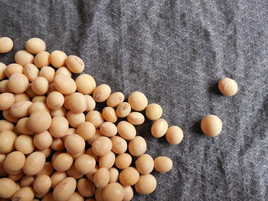

1. Whole Grains
Eat whole grains at least two or three times daily. Look for whole wheat flour, rye, oatmeal, barley, amaranth, quinoa or a multigrain. A good source of fiber has 3 to 4 grams of fiber per serving. Whole Grains contain B vitamins, iron, potassium and magnesium. Which is very good for your body, but remember to not eat too much whole grains.
2. Fish
Try to eat two to three servings of fish a week. A serving consists of 3 to 4 ounces of cooked fish. Good choices are salmon, trout, herring, bluefish, sardines and tuna. Fish contain a lot of omega-3, vitamin D. Which helps your heart, lungs and the immune system in your body.
3. Dairy/ non Dairy
Eat or drink at least yogurt, milk or other dairy products. If you have lactose intolerance, try oat milk, or soya milk. Those two options are rich in proteins and are environmentally friendly. You will get enough vitamin D, vitamin B12, proteins, and good body fat.
4. Soy
25 grams of soy protein a day is recommended as part of a low-fat diet to help lower cholesterol levels. Try tofu, soy milk, edamame soybeans, tempeh and texturized vegetable protein (TVP).
5. Mushroom
Many people think mushrooms are disgusting, and taste weird. But what many don't know is that mushrooms contain a lot of healthy vitamins. This kinda vitamins are vitamin A, vitamin C and a lot of vitamin B. Vitamin A contains calcium, vitamin C contains iron, and vitamin B contains riboflavin, and pantothenic acid. Combining these vitamins from the mushrooms helps to protect your heart health, and red blood cells. Niacin is good for the digestive system and for maintaining healthy skin.
6. Berries
Include two to four servings of fruit in your diet each day. Try to eat berries such as raspberries, blueberries, blackberries and strawberries. Berries are very healthy for your inner body's cells.
7. Apples
Apples are an excellent source of antioxidants, which combat free radicals. Free radicals are damaging substances that the body generates. They cause undesirable changes in the body and may contribute to chronic conditions, as well as the aging process.However, some studies Trusted Source have suggested that an antioxidant in apples might extend a person’s life span and reduce the risk of chronic disease.
8. Chicken
Chicken is a cost effective and healthful meat. Free-range chicken serves as an excellent source of protein. However, it is important to remember that preparation and cooking methods affect how healthy chicken is. This means that people should limit their intake of deep-fried chicken and always remove the skin before consumption. Chicken skin has high levels of saturated fat. But it all comes to how you want to eat the chicken. If you want the skin on, then have it on.

9. Kale
Kale is a leafy green vegetable that offers a wide range of different nutrients. For example, this powerfully nutritious plant is an excellent source Trusted Source of vitamins C and K. People can cook or steam kale. They can also blend it into smoothies or juices for a nutritional kick.

10. Egg
Eggs are another source of protein that people can easily incorporate into a balanced diet, as they are highly versatile. Eggs contain vitamins including B-2 and B-12, both of which are important for preserving energy and generating red blood cells. Eggs are also a good source of the essential amino acid leucine, which plays a role in stimulating muscle protein synthesis. Eggs also provide a good amount of choline, which is important for cell membranes. The yolk contains most of the egg’s vitamins and minerals, as well as the fat and cholesterol. However, one 2017 review found that eating up to seven eggs per week does not increase the risk of heart disease. That said, the authors mention that people with cardiovascular disease or diabetes should seek medical consultation about including eggs in the diet. But it could have a risk of heart disease if you put a lot of salt, or other accessories to the egg. But of course eggs are very healthy if you use it the right way.